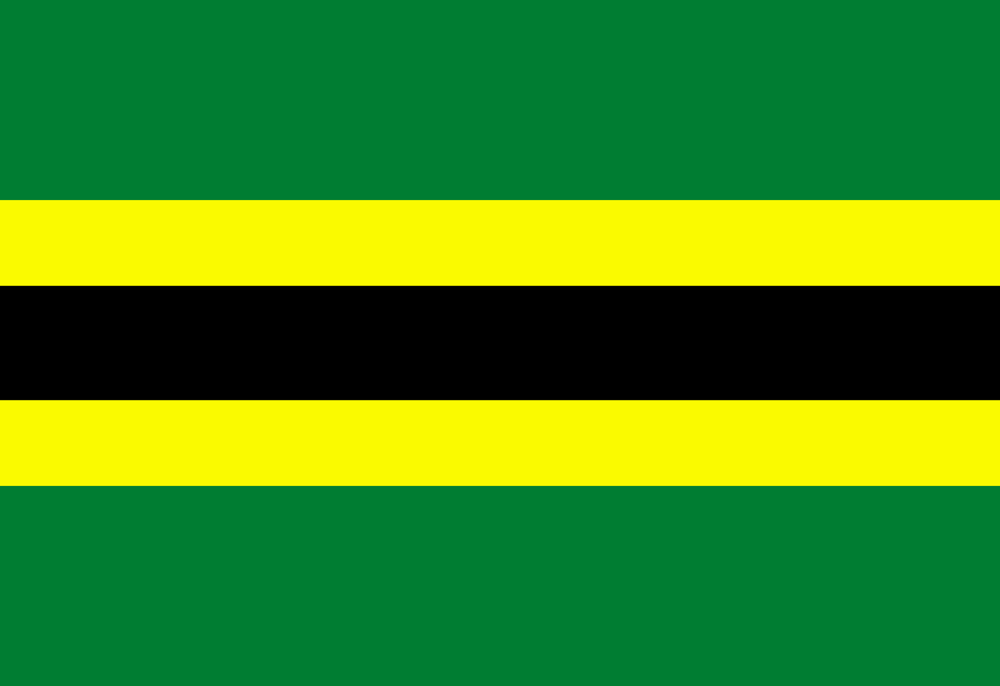
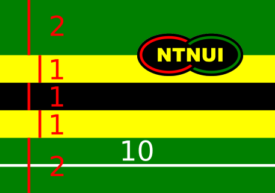
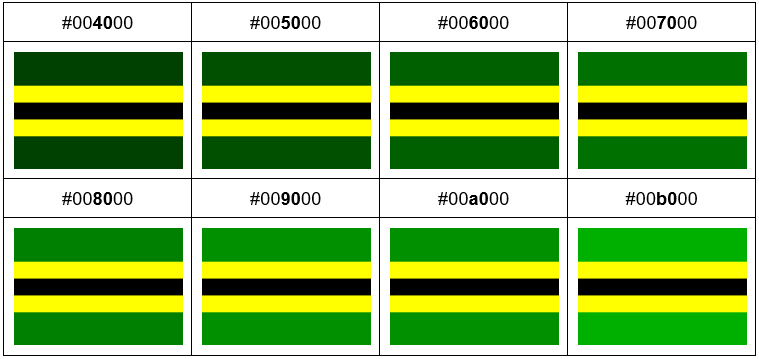
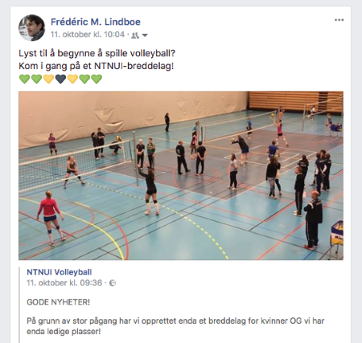

Dato: 09/11/17
Forfatter: Frédéric Ménard Lindboe
OBS: NTNUI-statuttene ønsker at stripene har relativ størrelse 3:4:3 (gul:svart:gul). Dette var noe jeg ble gjort oppmerksom på ved en tilfeldighet samme dag som dette innlegget publiseres. Der var det også bestemt en standard grønntone. Jeg synes det er best å samkjøre flaggdesignet med etablert draktdesign, det er jo tross alt det etablerte fargemønsteret jeg hyller, dermed blir det endelige flaggforslaget som følger (med stripetykkelseproporsjoner 7:3:4:3:7 og flaggforhold 24:35):NTNUI-statuttene ønsker at stripene har relativ størrelse 3:4:3 (gul:svart:gul). Dette var noe jeg ble gjort oppmerksom på ved en tilfeldighet samme dag som dette innlegget publiseres. Der var det også bestemt en standard grønntone. Jeg synes det er best å samkjøre flaggdesignet med etablert draktdesign, det er jo tross alt det etablerte fargemønsteret jeg hyller, dermed blir det endelige flaggforslaget som følger (med stripetykkelseproporsjoner 7:3:4:3:7 og flaggforhold 24:35):
OPPRINNELIG ARTIKKEL:
Merk at denne artikkelen bygger på det temaet i denne artikkelen. Det anbefales at du leser den før du fortsetter å lese. Her er begrunnelsen for farger og proporsjoner til det foreslåtte designet:
Fargetonene er hentet fra den logoen som er å finne på NTNUIs hjemmesider:
Tonen til grønnfargen har variert avhengig av plaggleverandør, stofftype eller maling. Skal man bestille ordentlige og sydde flagg er det kun fåtall tilgjengelige fargetoner uansett, så ordentlige flagg vil vike noe fra forslaget over. Under følger et nyansespekter av grønnalternativer og hvordan de ser ut i flagget:
De relative stripetykkelsene er 2:1:1:1:2 (grønn:gul:svart:gul:svart) mens selve flaggproporsjonene er satt til 7:10 (høyde:bredde). Utgangspunktet for stripetykkelsene er at på de fleste NTNUI-drakter jeg har sett ser den svarte stripen omtrent like tykk ut som de gule, kanskje er den litt tykkere. De grønne stripene på topp og bunn er satt til å være dobbelt så tykke som hver av de gule og svarte for at det grønne som hovedfarge skal feste seg. Nøyaktig dobbelt så tykt grønt som gult eller svart er valgt for at proporsjonene skal være lette å anvende for å lage flagg ut av fargede gjenstander i samme størrelse: Du kan strø en kake med Non Stop à 2+2 rader grønne, 1+1 rad gule og 1 rad svarte eller publisere et innlegg på sosiale med 2+2 grønne, 1+1 gule og 1 svart hjerte.
Flaggproporsjonene 7:10 er valgt fordi flagg pleier å være rektangulære og at det skal være lett å regne på det om man skal lage det for hånd. Om flagget blir litt lenger eller litt kortere er ganske uvesentlig, men huskeregelen om å gange stripelengde med fem for gult og svart eller ti for grønt er et bra utgangspunkt for å få noe som ligner på et ordentlig flagg.